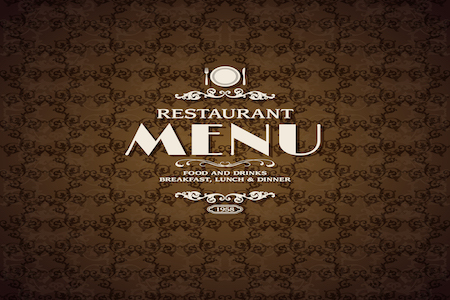
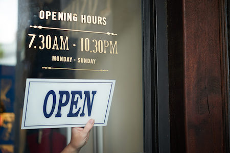

Our New Menu

Based in Chicago, Illinois, Little Lemon is a family-owned Mediterranean restaurant, focused on traditional recipes served with a modern twist. The chefs draw inspiration from Italian, Greek, and Turkish culture and have a menu of 12-15 items that they rotate seasonally.
Book a Table
Based in Chicago, Illinois, Little Lemon is a family-owned Mediterranean restaurant, focused on traditional recipes served with a modern twist. The chefs draw inspiration from Italian, Greek, and Turkish culture and have a menu of 12-15 items that they rotate seasonally.
Opening Hours

Based in Chicago, Illinois, Little Lemon is a family-owned Mediterranean restaurant, focused on traditional recipes served with a modern twist. The chefs draw inspiration from Italian, Greek, and Turkish culture and have a menu of 12-15 items that they rotate seasonally.